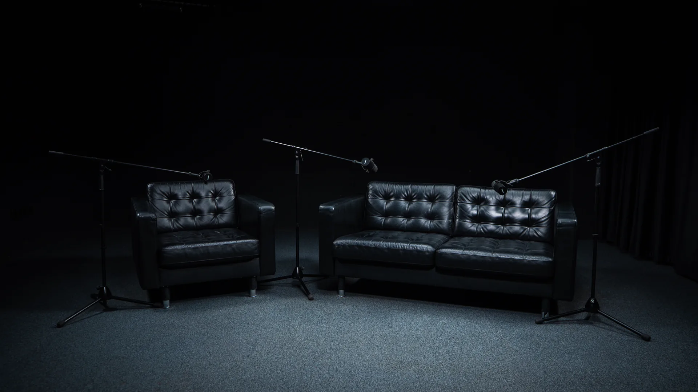
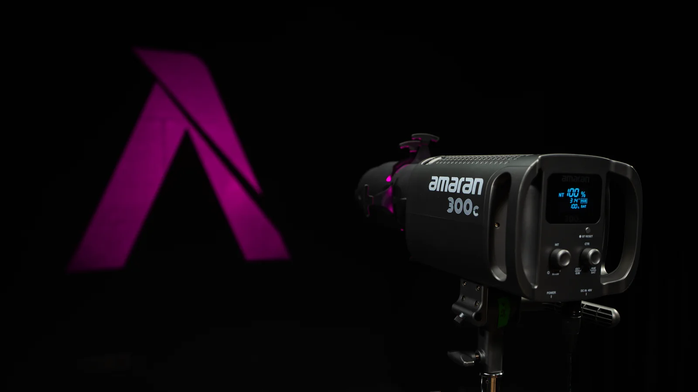
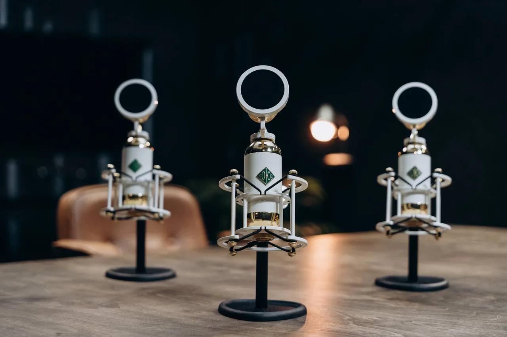
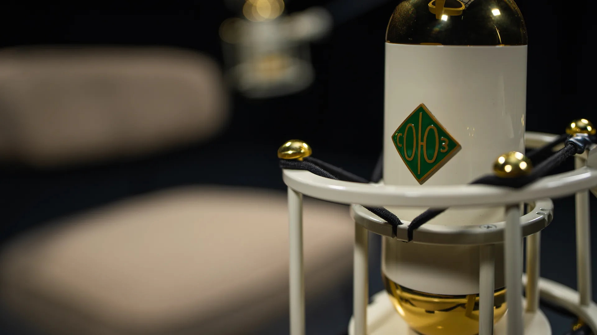
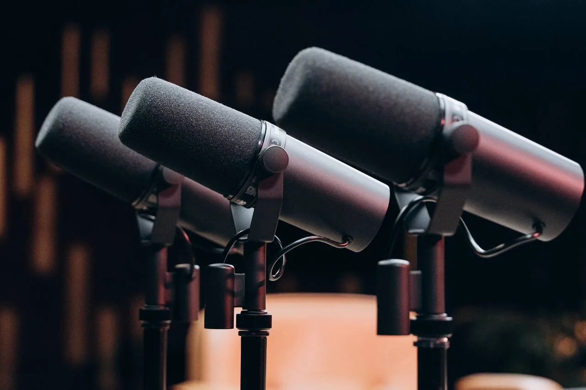
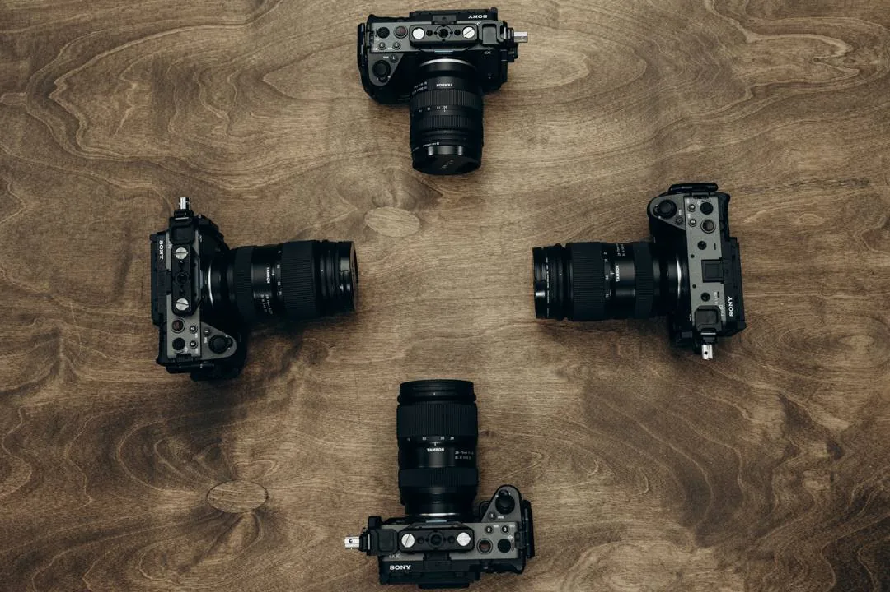

Иваницкая В.
★★★★★
Хочу оставить самые тёплые слова о студии, где мы записывали подкаст. Атмосфера уютная и профессиональная: свет, звук и картинка - на высшем уровне.
Яндекс Карты
От первого выпуска до серии или полного съёмочного дня - заранее понятно, что входит в работу и какой результат вы получите.
Готовый аудио- и видеоподкаст с возможностью согласованных правок.
Рассчитать выпускСерия для регулярного выхода: четыре выпуска и контент для их продвижения.
Обсудить сериюДля записи нескольких форматов за один день с командой студии.
Запланировать деньДля дискуссий, круглых столов и разговоров с несколькими гостями.
Обсудить форматМы строим кадр без визуального шума: свет, композиция, фон и звук работают на речь спикера. Поэтому контент выглядит профессионально, а мысли звучат уверенно.
Проверим посадку, свет и ракурс. До старта сделаем короткую тестовую запись.
Каждый голос пишется отдельно, несколько ракурсов сохраняют динамику разговора.
Из одной съёмки можно подготовить тизер, вертикальные ролики и обложки.


Камерный сетап для беседы или подкаста на двух-четырёх человек. Микрофоны, свет и ракурсы собраны так, чтобы вы сосредоточились на разговоре.
Мягкая посадка и выразительный свет для живого диалога. Подходит для интервью, авторских выпусков и разговоров с гостями.
Два кресла, чистая композиция и комфортная дистанция между собеседниками. Хороший выбор для экспертного интервью или личного разговора.
Просторная площадка для подкастов, видеошоу и съёмок с несколькими камерами. Конфигурацию можно собрать под ваш формат и число гостей.
Спокойное место для гостей и команды перед записью. Здесь можно собраться, обсудить выпуск или перевести дух между дублями.
Отдельная зона с зеркалом и светом, чтобы подготовиться к съёмке без спешки и выйти в кадр в уверенном состоянии.
Постоянный студийный свет помогает сохранить объём, естественный тон кожи и чистую картинку в каждом ракурсе.



Нажмите на плюс, чтобы посмотреть, как устроен каждый угол студии.
Одна площадка — несколько способов превратить вашу экспертность, историю или разговор в качественный видеоконтент.
Разговор на двух–четырёх человек с несколькими камерами и отдельными аудиодорожками.
Подобрать видеоподкастБеседа с гостем, клиентом или экспертом. Поможем выстроить кадр и подготовить структуру.
Подобрать интервьюСерия коротких видео за одну смену — по вашему сценарию или с редактором.
Рассчитать роликиКонцепция, съёмка, монтаж и адаптация материала под площадки без своего продакшена.
Рассчитать выпуск под ключОдна площадка — несколько способов превратить вашу экспертность, историю или разговор в качественный видеоконтент.

Базовая запись подкастов и интервью: готовый сетап, команда на площадке и материал, с которого удобно начинать выпуск. Минимальное время - от 2 часов.
Рассчитать съёмку ↗
Запись аудиоподкастов и голосовых форматов в тихом студийном режиме - без лишнего визуального продакшена, с фокусом на разговоре.
Рассчитать запись ↗
Съёмка коротких вертикальных роликов для эксперта или бренда: соберём выразительный кадр, чтобы мысль сразу работала в ленте.
Рассчитать рилс ↗
Запись обучающих видео и курсов в собранном кадре: удобно объяснять материал, работать с планом занятия и держать внимание зрителя.
Рассчитать урок ↗
Товары, мерч, реквизит и обложки в студийном свете - для карточек, анонсов, социальных сетей и визуального языка бренда.
Рассчитать съёмку ↗Формат для четырёх и более гостей: до пяти камер, расширенный свет и звук, чтобы удержать в кадре большой разговор.
Рассчитать шоу ↗
Запись и базовая обработка аудио для голосовых форматов, подкастов и интервью - чтобы голос звучал собранно и разборчиво.
Рассчитать звук ↗
Запишем подкаст на вашей площадке и подготовим материал к выпуску: команда, техника и монтаж рассчитываются в рамках одного проекта.
Рассчитать проект ↗Каждый голос записывается на отдельную дорожку — это даёт больше свободы при монтаже и обработке.
Световой комплект позволяет собрать мягкий разговорный кадр или более акцентную визуальную подачу.
Несколько камер одновременно фиксируют общий план и детали разговора, чтобы монтаж сохранял его естественный ритм.





От первого выпуска до серии или полного съёмочного дня - заранее понятно, что входит в работу и какой результат вы получите.
Готовый аудио- и видеоподкаст с возможностью согласованных правок.
Серия для регулярного выхода: четыре выпуска и контент для их продвижения.
Для записи нескольких форматов за один день с командой студии.
Для дискуссий, круглых столов и разговоров с несколькими гостями.

Микрофон под голос каждого участника, отдельные дорожки.

Общий и крупные планы одновременно — для динамичного монтажа.

Схема под внешность спикеров, одежду, фон и настроение.

Контролирует камеры, звук и запись всю съёмку.
Даём освоиться, проверяем ракурсы, пишем тест.

Гримёрка, вода, чай, кофе, Wi‑Fi, зона ожидания.
Оставляете заявку. Уточняем участников, длительность и нужный результат.
Согласовываем сетап, свет, гостей и дополнительные услуги. При необходимости — помогаем со структурой.
Знакомитесь с пространством, делаете тестовый дубль, а команда держит техническую часть.
Отправляем исходники или готовый выпуск в согласованный срок. Дополнительно — обложку, тизер и ролики.

Не нужен опыт телеведущего, идеальный сценарий или поставленный голос. Перед съёмкой объясним, как подготовиться, и дадим время привыкнуть к камерам.
Для записи выпуска продолжительностью до часа рекомендуем бронировать два часа: подготовка, тестовая запись и сам разговор.
Да. Можно арендовать студию с нашей командой или заранее согласовать работу вашего специалиста.
Исходные материалы передаём в течение [24 часов]. Срок готовности монтажа зависит от пакета и обычно составляет [3–7 рабочих дней].
Да, подключим гостя по видеосвязи и запишем его звук отдельной дорожкой.
Да. Можно заказать консультацию редактора, разработку структуры и вопросов для интервью, подготовку спикеров.
Расскажите, что планируете снимать. Сначала отправим варианты и стоимость в выбранный мессенджер — без длинных созвонов.
Ежедневно 10:00 — 22:00
8 мин пешком (700 метров) от м. Серпуховская